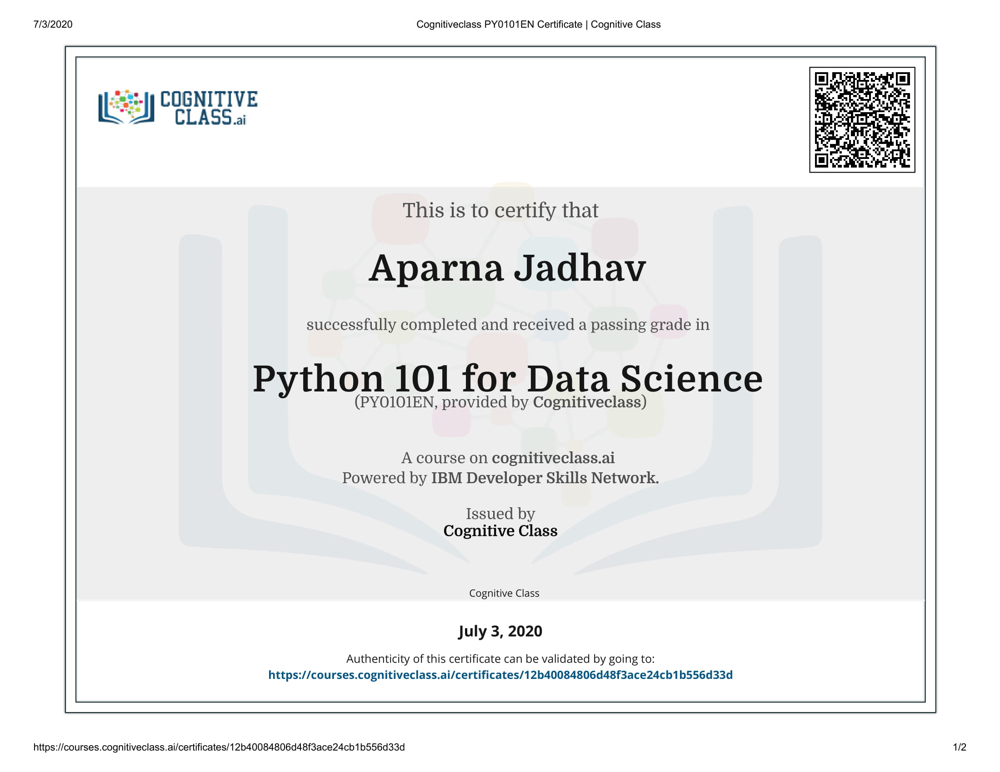
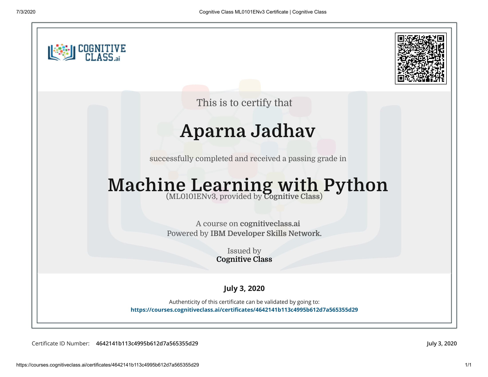
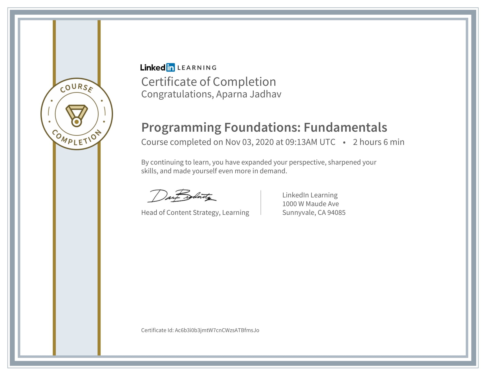
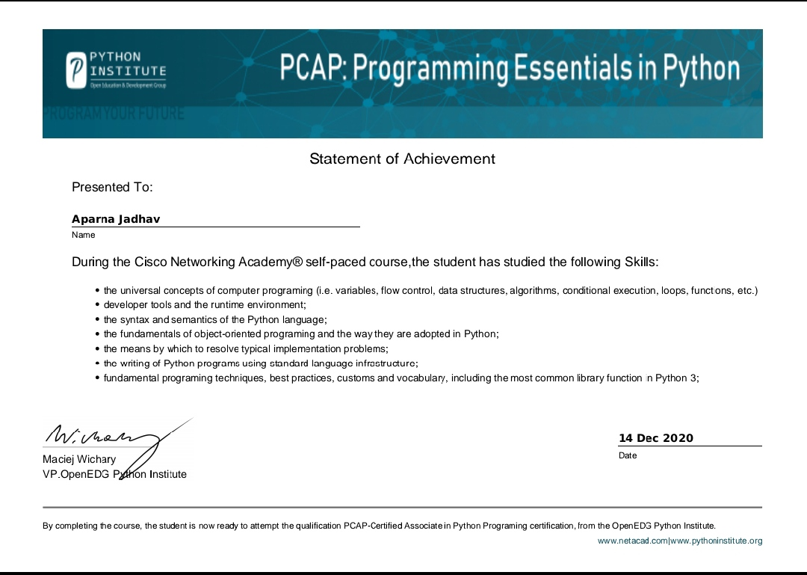
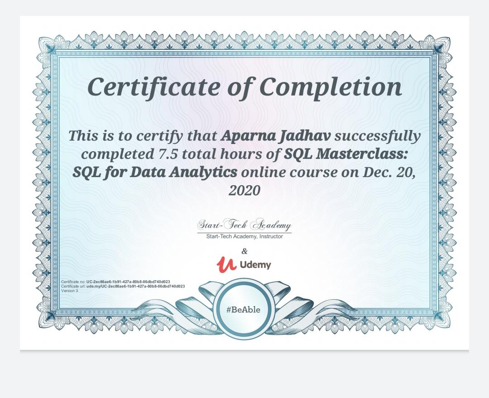
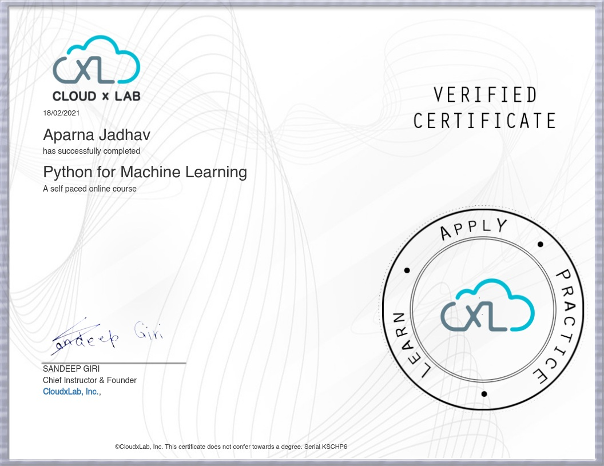
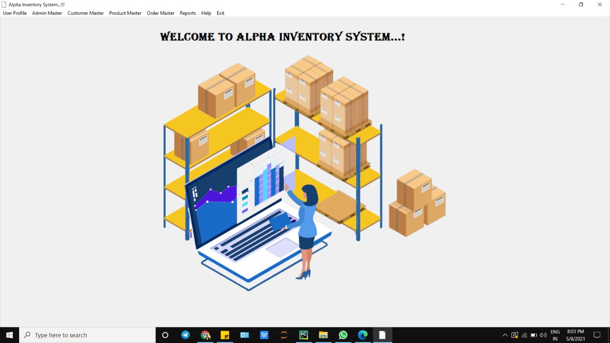
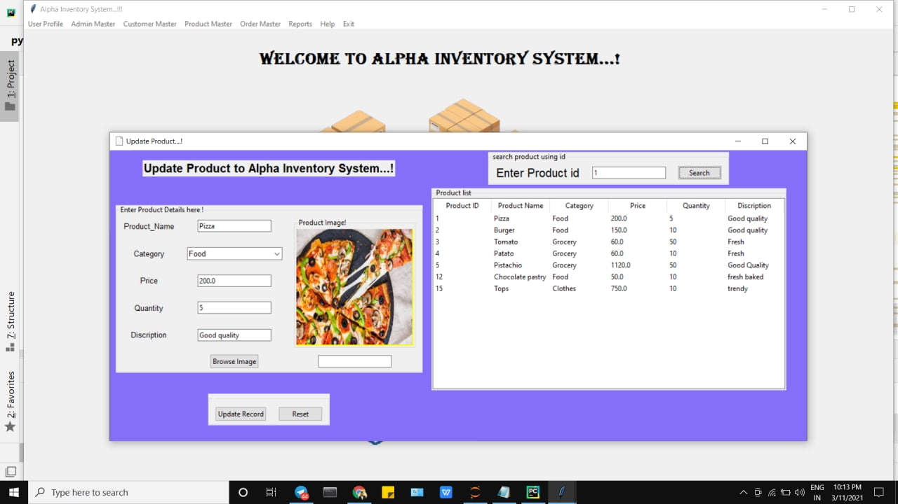

To work in a competitive that is both challenging and inspiring environment where my abilities accept to its outmost and to be the assets to the organization., Completed She Arise Training that is provide by CSR Initiative of Altran, the part of Capgemini Governed by NASSCOM Foundation Under Centum Foundation. During this training Explores python with data analytics. Create Desktop Application that is Alpha Inventory Management System.
Developer
MP, India
aparnajadhav2904@gmail.com
+919516640266
Achievements
Second position in Indore Nodal Competition yoga Tournament - 2018
Skills
Python
C
C++
MYSQL
Languages
English
Hindi
Marathi
Soft Skils
Needs analysis
Problem solving, Work ethic teamwork.
Willingness to learn new things.
Self motivated and detail oriented
Good communication and presentation skills
Industrial training on Embedded system design
Center for Research and Industrial Staff Performance,Bhopal.
Ericsson
Prestige Institute of Engineering Management & Research (PIEMR), Indore(MP)
Implement Selective Mapping Technique which would :1)Reduce the PAPR as compared to conventional OFDM, 2)Exhibit the dependence of PAPR on the number of sub carriers,3) Exhibit the dependence of PAPR on the phase vector length
A robotic arm is designed using arduino to pick and place the objects via user commands. The robot is controlled using push button or by keyboard.Based on the commands given by the user the robot moves accordingly. At the receiver end there are four motors interfaced with the Arduino uno(ATmega328p)







